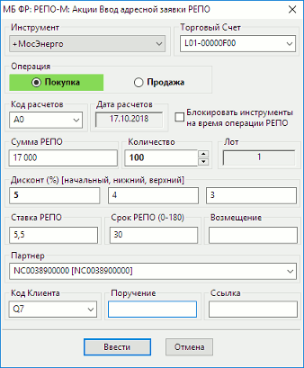

Ввод адресной заявки РЕПО-М

- «Инструмент»* – выберите название инструмента из списка инструментов
данного класса.
- «Торговый счет»* – выберите из списка номер торгового счета, в отношении которого делается поручение (регистр символов имеет значение).
- «Операция»* – направление операции: «Покупка» или «Продажа».
- «Код расчетов» – укажите вручную либо выберите из списка код расчетов по первой
части сделки РЕПО (РЕПО-М). Возможные значения:
- «T0» или «Rb» - расчеты «сейчас»,
- «S0» - расчеты сегодня,
- «S01» - расчеты осуществляются в следующий торговый день,
- «S02» - расчеты осуществляются через один торговый день
- «Z0» - расчеты осуществляются по правилам простого клиринга Московской Биржи.
Если поле не заполнено, принимается значение по умолчанию: «T0».
Для валютного рынка используются значения: «T0», «T1», «F1W», «F2W», «F1M», «F2M», «F3M», «F6M», «F1D-F180D».
- «Дата расчетов» – дата расчетов по сделке для указанного инструмента и кода расчетов (информационное поле).
- «Блокировать инструменты на время операции РЕПО» - признак блокировки
инструментов. Выставленный флажок означает, что инструменты, приобретенные по первой части
РЕПО-М, блокируются в депозитарии до выполнения всех обязательств по сделке.
- «Сумма РЕПО»* – объем сделки РЕПО (РЕПО-М) в денежном выражении.
- «Количество»* – количество инструментов, выраженное в лотах.
- «Лот» – количество инструментов в одном лоте. Информационное поле.
- «Дисконт (%) начальный, нижний, верхний» – условие сделки РЕПО-М, которое
может устанавливаться сторонами сделки РЕПО-М при ее заключении:
- Начальное значение дисконта (Начальный дисконт)
– условие сделки, указывается в заявке на заключение сделки в явном виде или
однозначно определяется из условий заявки.
- Нижнее предельное значение дисконта – условие сделки, выражается в
процентах. Если Дисконт становится меньше Нижнего предельного значения
дисконта, у Первоначального продавца возникает обязательство по внесению
Компенсационного взноса в денежной форме.
- Верхнее предельное значение дисконта – условие сделки, выражается в
процентах. При превышении Дисконтом величины Верхнего предельного значения
дисконта у Первоначального покупателя возникает обязательство по внесению
Компенсационного взноса Облигациями.
- «Ставка РЕПО» – процентная ставка платы за пользование ресурсами, в %
годовых.
- «Срок РЕПО (0-180)» – промежуток времени, выраженный
в календарных днях, между датами исполнения первой и второй частей сделки
РЕПО-М. Срок исчисляется со дня, следующего за днем исполнения первой части сделки,
до дня исполнения второй части сделки включительно.
- «Возмещение» – ставка
возмещения в случае просрочки исполнения обязательств по сделке РЕПО-M,
выраженная в процентах. Во встречных заявках значение должно
совпадать.
- «Партнер»* – выберите из списка либо укажите
вручную краткое наименование контрагента по сделке.
- «Код Клиента» - идентификатор клиента в системе QUIK.
- «Поручение» – текстовый комментарий к заявке.
- «Ссылка» – текстовая строка, служащая для сопоставления встречных заявок в сделке. Если один из
контрагентов заполнил это поле, то другой контрагент обязан ввести то же значение.
- Звездочкой (*) отмечены обязательные поля.
- Поля «Количество», «Код клиента», «Ссылка», «Поручение» могут быть
заполнены автоматически. Подробнее см. п. «Настройка
автозаполнения полей ввода заявки».
Нажатием кнопки «Ввести» заявка отправляется в торговую систему. Нажатие
кнопки «Отмена» закрывает окно без отправления заявки.
Заявка, принятая торговой системой, отображается в Таблице заявок на
внебиржевые сделки.
См. также: